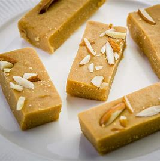
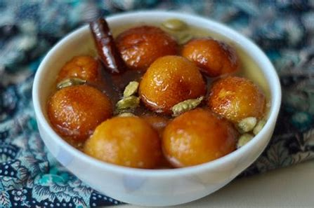
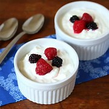

Welcome To My Recipe Project ✌️
Dish Lists & Delicious Food🤤
- Cup of hot milk
- Coffee Powder
- Coffee machine
- Lastly sugar
1. Combo - Coffee with Bread
Process of making coffee and bread:

- 250 grams unsweetened khoya
- Take in a small bowl
- soak 12 to 15 saffron strands in 1 to 1.5 teaspoons milk
- Line a tray or thali with a butter paper or parchment paper and grease it with some ghee
- Add the grated khoya in a thick bottomed pan or kadai
- Begin to cook on low heat for 2 to 3 minutes. Stir often
2. Very Sweet - Barfi
Process of making Barfi:

- Mix mashed khoya with chenna, soda bicarbonate, maida, elaichi powder and water to make a dough
- Make multiple balls from the dough of the jamun size
- Mix sugar with equal water to make a sugar syrup and keep aside on low heat
- Heat the desi ghee in a pan.
- Deep fry the jamun balls in desi ghee on low heat until golden.
3. All Time Favourite - Gulab Jamun
To make Gulab Jamun, you need to:

- Modification of Milk - reducing the fat content and increasing the total solids in the milk
- Pasteurization and Homogenization - Pasteurization destroys microorganisms, Homogenization subjects milk fat globules to severe conditions
- Last but least - You can mix sugar in it for making it sweet and eat nicely
4. For Good Work - Eat Yogurt
How Yogurt Is Processed:
